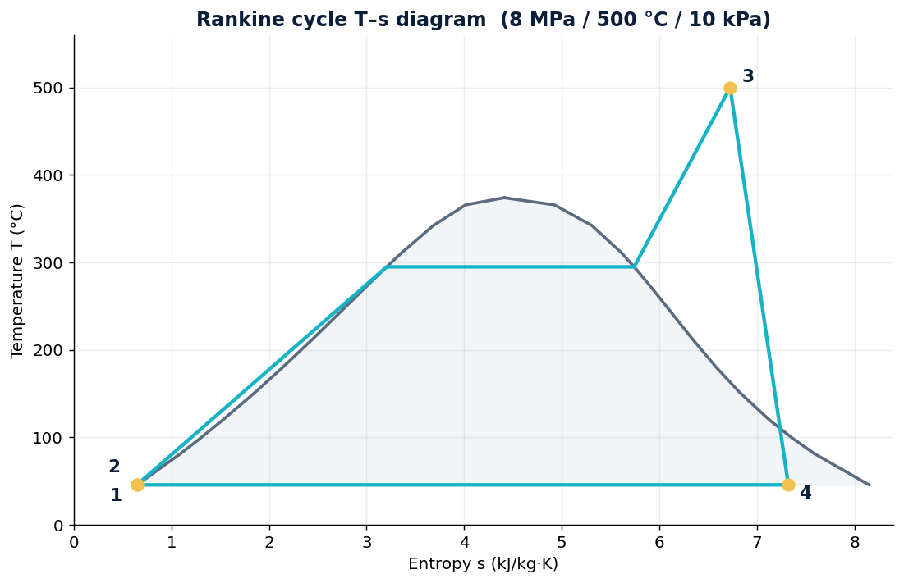
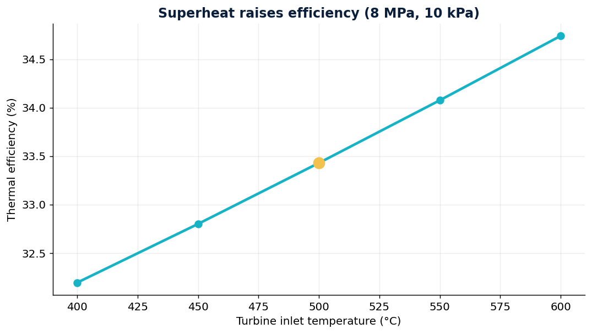
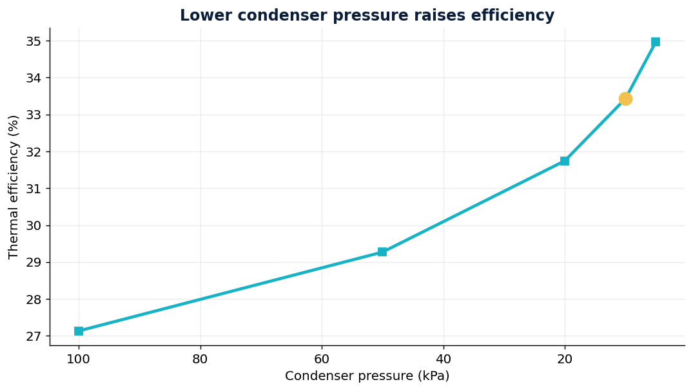

Full thermodynamic analysis and optimisation of a steam Rankine cycle: every state computed from real steam properties (CoolProp / IAPWS-IF97), the T–s diagram, efficiency with real turbine and pump losses, back-work ratio, and the three design levers — boiler pressure, superheat and condenser pressure.
Analyse a steam power plant running a Rankine cycle at boiler 8 MPa, turbine inlet 500 °C and condenser 10 kPa, with realistic component efficiencies (turbine 0.85, pump 0.85). Find the thermal efficiency, the work split, the turbine-exit steam quality — and how to push the efficiency higher.

| State | Point |
|---|---|
| 1 — condenser exit | sat. liquid, 10 kPa |
| 2 — pump exit | compressed liquid, 8 MPa |
| 3 — turbine inlet | superheated, 500 °C |
| 4 — turbine exit | x = 0.89, 10 kPa |
Sweeping each design variable (everything else fixed) quantifies the three classic ways to raise Rankine efficiency: higher superheat, higher boiler pressure, and lower condenser pressure.

